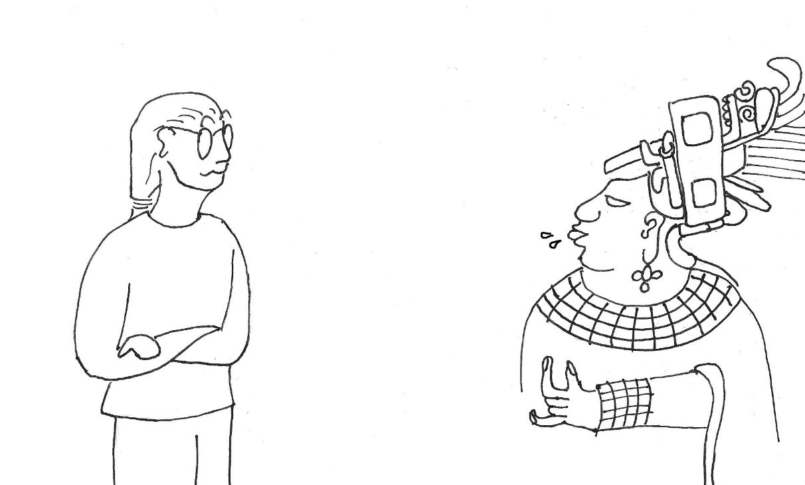
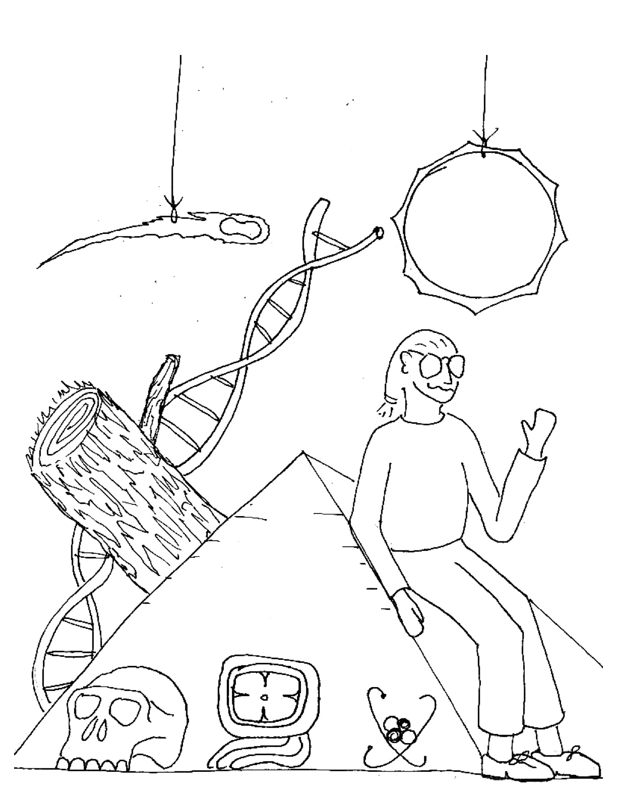

Cartoon warnings for the chapters in "The Age of Everything"
Chapter 1 (Introduction)
WARNING! Astrophysicist juggling too many subjects!
Chapter 2 (The Calendars of the Classic Maya)

WARNING! Astrophysicist writing about Mayan Hieroglyphs!
Chapter 3 (Precession, Polaris and the Age of the Pyramids)
WARNING! Astrophysicist writing about Egyptology!
Chapter 4 (The Physics of Carbon-14)
WARNING! Astrophysicist writing about Nuclear Physics!
Chapter 5 (Calibrating Carbon-14 Dates and the History of the Air)
WARNING! Astrophysicist writing about Dendrochronology!
Chapter 6 (Carbon-14 and the Peopling of the New World)
WARNING! Astrophysicist writing about Archaeology!
Chapter 7 (Potassium, Argon, DNA and Walking Upright)
WARNING! Astrophysicist writing about Paleoanthropology!
Chapter 8 (Molecular dating and the Many Different Types of Mammals)
WARNING! Astrophysicist writing about Mammalian Phylogeny!
Chapter 9 (Meteorites and the Age of the Solar System)
WARNING! Astrophysicist writing about Meteorites!
Chapter 10 (Colors, Brightness and the Age of Stars)
WARNING! Astrophysicist writing about Astronomy!
Chapter 11 (Distances, Redshifts and the Age of the Universe)
WARNING! Astrophysicist writing about Supernovae!
Chapter 12 (Parametrizing the Age of the Universe)
WARNING! (Experimental) Astrophysicist continuing to write about
Cosmology!
